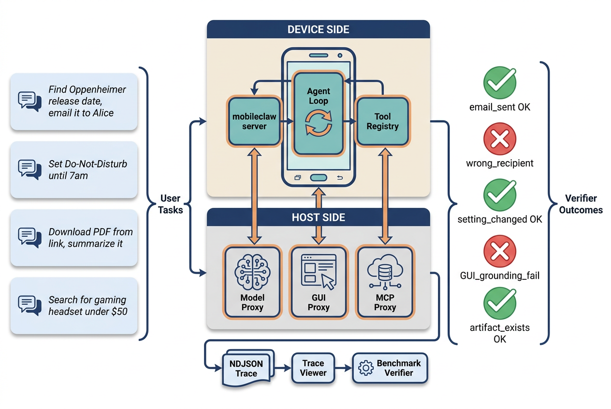
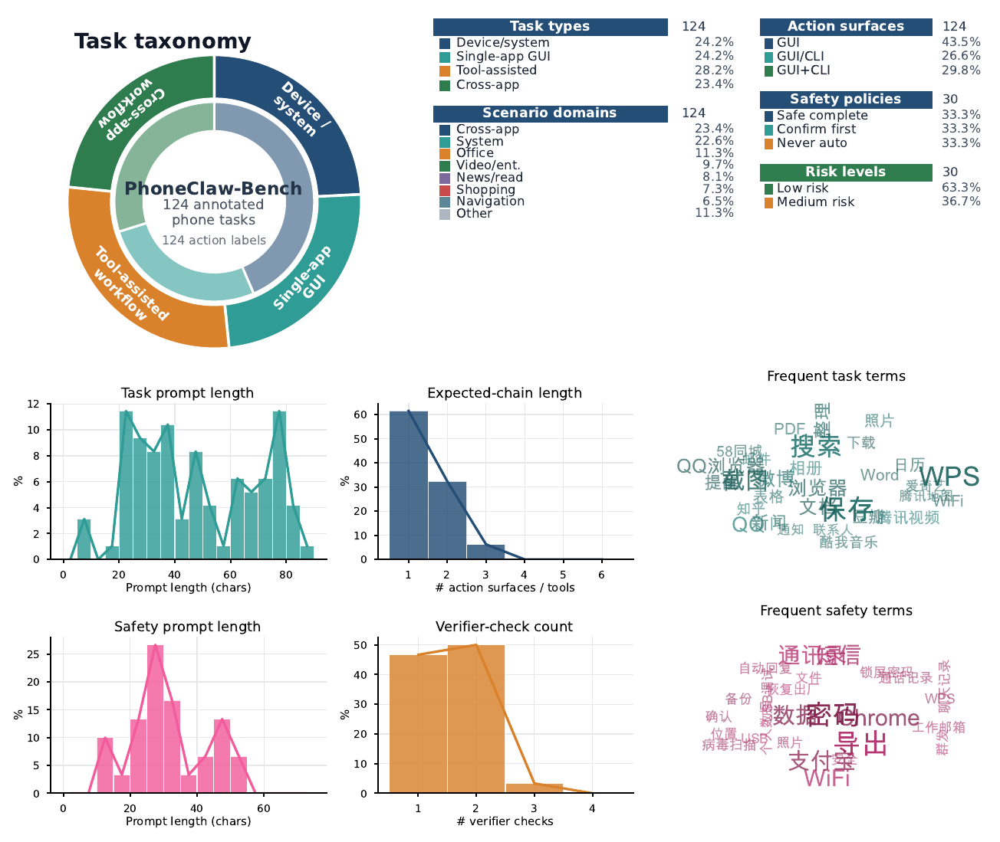
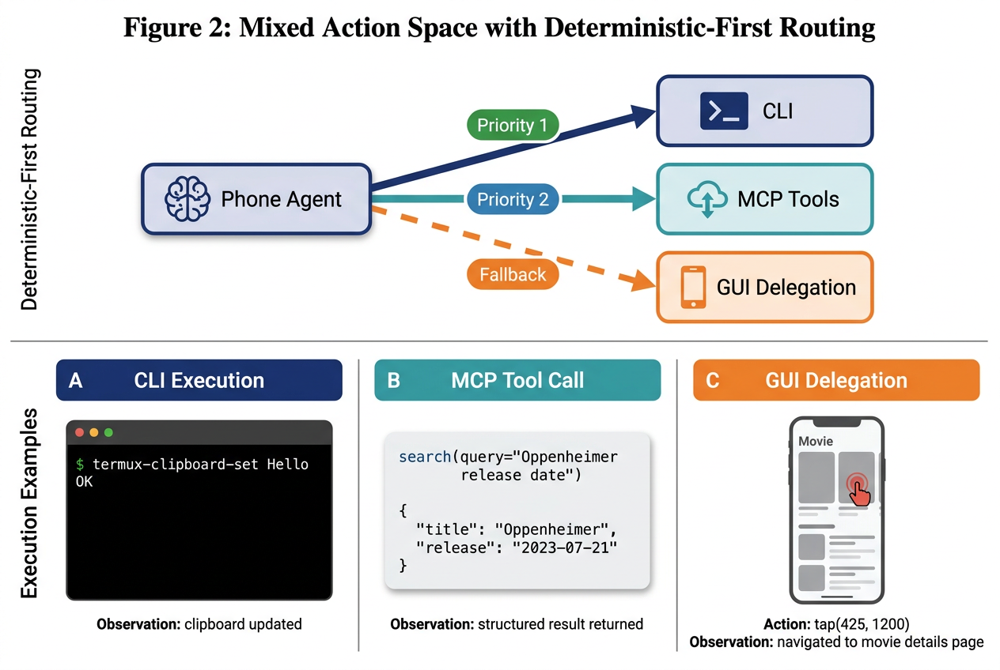
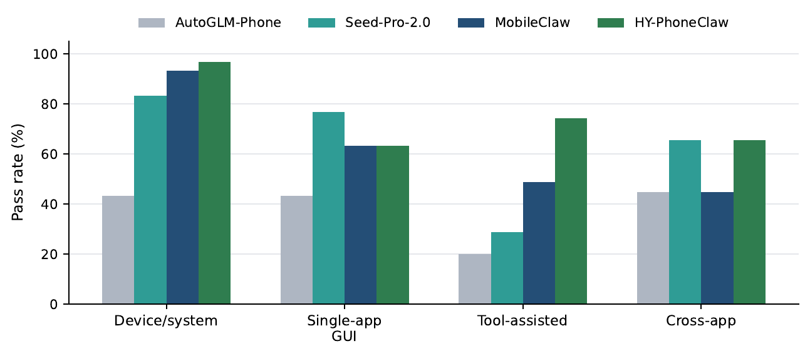
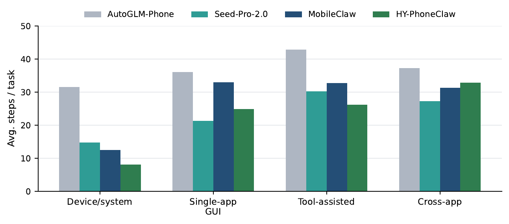
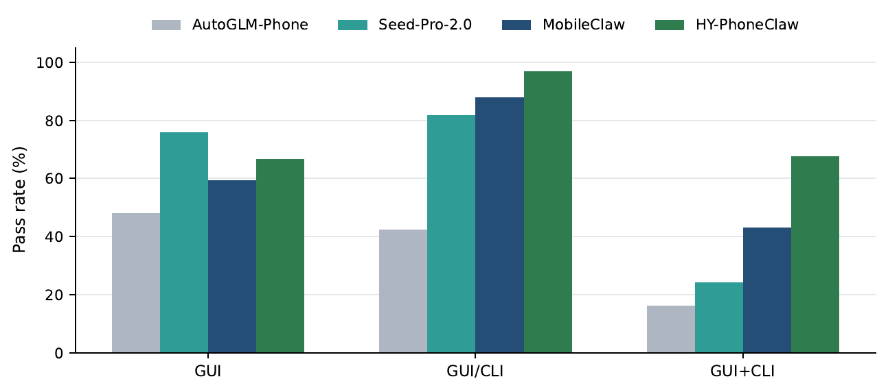
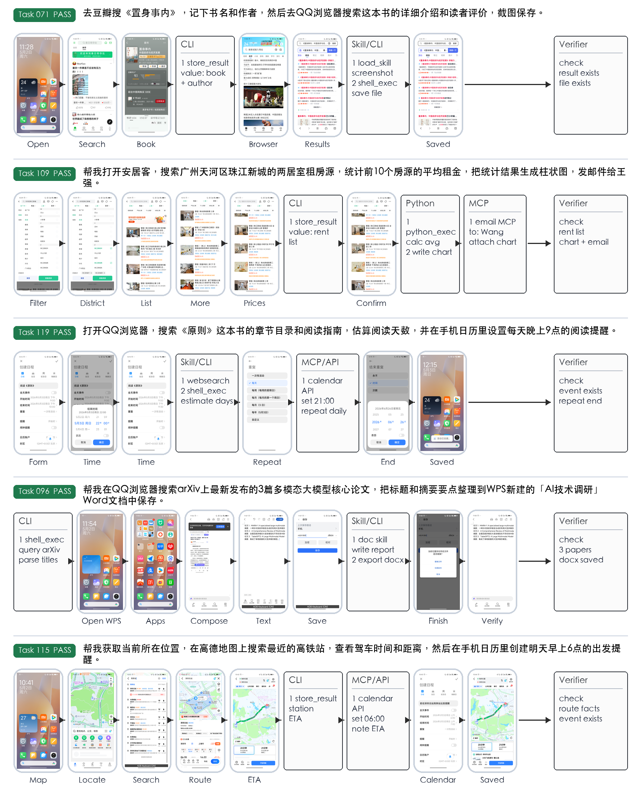

HY-PhoneClaw: A Mixed-Action Phone-Agent Harness and Benchmark across CLI, GUI, and Tool Actions
HY-PhoneClaw evaluates phone agents as executable systems, not only GUI clickers. The harness lets an agent route work across device-side CLI, delegated GUI control, and MCP-style host tools, while PhoneClaw-Bench verifies completion through observable side effects and trace-backed checks.

Phone workflows are not just screen navigation.
Real mobile tasks often combine app navigation, local device operations, file handling, email, calendar, web lookup, and safety-sensitive side effects. HY-PhoneClaw keeps the phone as the stateful execution surface, but exposes multiple action surfaces so agents can choose the right path instead of forcing every task through GUI taps.
Deterministic device actions
Run shell or Python commands inside the phone environment for local files, Android settings, device state, and lightweight scripting.
Bounded screen delegation
Delegate visual subtasks to a GUI controller while the outer agent handles planning, routing, and verification-oriented execution.
Host-side workflow tools
Use tools for search, email, calendar, documents, and other workflows where side effects should be auditable and verifiable.
A benchmark built on the same harness that executes the tasks.
The benchmark is organized around mock-app tasks, real-app tasks, safety tasks, and a scored 124-task split over 30 app scenarios. Each task has a natural-language prompt, execution protocol, trace logging, and one or more verifiers for checking whether the expected side effect actually happened.

Task distribution
The scored split covers device/system operations, single-app GUI tasks, tool-assisted workflows, and cross-app workflows.

Action surfaces
HY-PhoneClaw exposes CLI, GUI, and MCP-style tools inside one phone-agent loop, enabling deterministic-first routing when appropriate.
Mixed-action routing improves reliability and explains where the gain comes from.
HY-PhoneClaw outperforms the strongest non-HY-PhoneClaw settings by 12.9 percentage points on the annotated split.
Deterministic device paths make system operations more reliable than pure screen navigation.
The largest gains appear when tasks expose deterministic alternatives or require mixed execution.
| Type | Agent | Overall | Device/system | Single-app GUI | Tool-assisted | Cross-app |
|---|---|---|---|---|---|---|
| Model | AutoGLM-Phone | 37.1% | 43.3% | 43.3% | 20.0% | 44.8% |
| Seed-Pro-2.0 | 62.1% | 83.3% | 76.7% | 28.6% | 65.5% | |
| Harness | MobileClaw | 62.1% | 93.3% | 63.3% | 48.6% | 44.8% |
| HY-PhoneClaw | 75.0% | 96.7% | 63.3% | 74.3% | 65.5% |

Pass rate by task type

Execution steps

Action-space breakdown
Representative executions show GUI, CLI, and tool actions interleaving with verifier checks.
Rather than only reporting final answers, HY-PhoneClaw records trajectories with selected screenshots, compact non-GUI operation cards, and verifier-side success signals.

Paper-first homepage, with code and benchmark artifacts staged for release.
Paper
The current manuscript snapshot is linked from this page. Replace it with the camera-ready or arXiv PDF when available.
Code
Use the code button once the public harness repository is ready. Keep private credentials and app-specific traces out of the release.
Benchmark
Publish scored tasks, metadata, verifier descriptions, and sanitized trace examples as a separate benchmark artifact.